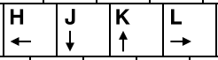

This is part of the #LinuxUpSkillChallenge. Don't forget to also check out the Official Instructions and the Reddit posts.
vim filename - create/open file
:w - save
:w newfilename - save as
:q! - close file and trash all changes (the ! forces the command)
:wq - save and close

gg - BOF
G - EOF
Vim modes: Normal, Insert, Visual, Command. Check out the freecodecamp post for more details.
Editing
d - Cut (delete)
y - Copy (yank)
p - Paste
u to undo the last command
CRTL + R - Redo
/ - Find
:%s/old/new/gc - Replace all occurrences of old for new, globally inside the file, and prompt a confirmation for every replacement
vimtutor - VIM own tutorial
For more detail on how I did each day, check out my log on Reddit. Follow me on Twitter for daily updates.